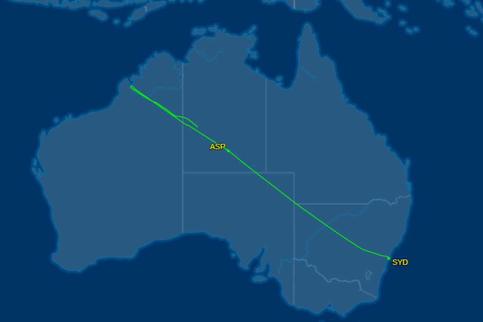

Who We Are
CareFlight is an aeromedical for purpose organisation established in May 1986 by a group of Australian doctors. CareFlight uses a variety of aircraft including aeromedical helicopters, jets and aeroplanes to bring injured and ill patients within Australia and overseas to emergency hospital care.

Why CareFlight Needs You!
CareFlight is indebted to Australians to donate to our charity so that we can expand our horizons. We also would love to have you on board as pilots, medical professionals and volunteers. Now more than ever CareFlight needs support from our wonderful community.
Track CareFlight Operations live here: 